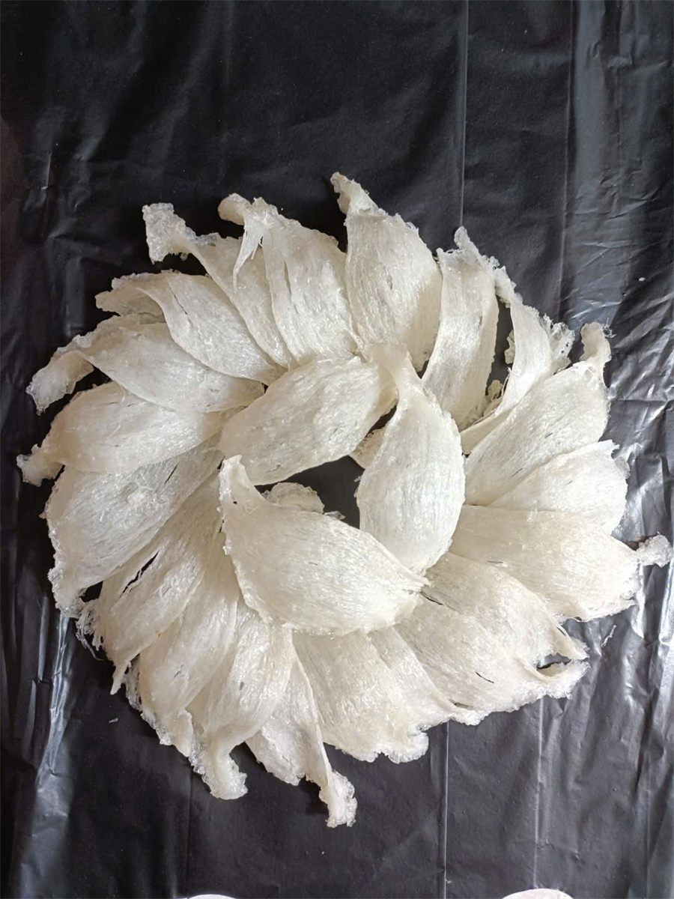
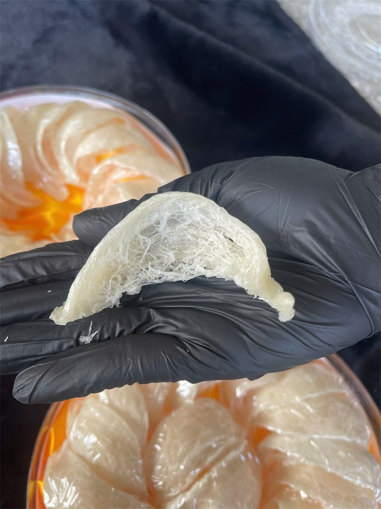

Các Loại Tổ Yến: Phân Loại Theo Phần Tổ, Cách Làm Sạch Và Màu Sắc
Yến Sào Lanest · Đăng ngày 12/10/2026

Tìm hiểu các loại tổ yến, anh chị sẽ gặp rất nhiều tên gọi: chân yến, sợi non, xơ mướp bụng, rút lông khô, yến vụn, chia viên... Thật ra tất cả đều là tổ yến, chỉ khác nhau ở phần nào của tổ, được làm sạch đến đâu và thành phẩm có hình dạng gì. Bài này phân loại theo đúng những gì đội thợ Lanest cầm trên tay mỗi ngày, để lần sau đọc tên sản phẩm là hiểu mình đang mua gì.
Tổ yến rút lông khô còn nguyên hình chén, thấy rõ phần chân dày và phần sợi mỏng
1. Tổ yến từ đâu mà có?
Tổ yến được chim yến làm bằng nước bọt, hình thành trên vách đá hoặc trong nhà yến. Các dòng tổ yến Lanest đang bán đều thu hoạch từ nhà yến ven biển miền Trung, chủ yếu ở Khánh Hòa, Bình Định, Phú Yên, Ninh Thuận, Bình Thuận.
Trên mạng còn nhiều cách gọi khác như yến đảo, huyết yến, hồng yến. Lanest không làm các loại này nên bài viết không bàn tới, vì chỉ muốn nói những gì mình làm và kiểm chứng được.
2. Phân loại theo phần tổ: chân, sợi, bụng và vụn
Một tổ yến có hình chén. Mỗi phần cho ra một loại yến khác nhau:
- Chân yến: phần gốc tổ, nơi tổ bám vào vách nhà yến. Đây là phần dày và chắc nhất, hàm lượng đạm cao nhất, khoảng 55–60% khối lượng khô.
- Sợi yến: phần sợi của tổ sau khi làm sạch. Loại "tinh chế 100% sợi" là toàn sợi, không pha vụn.
- Bụng tổ (xơ mướp bụng): phần bụng trong tổ, sợi mảnh và nhẹ. Bán riêng thì gọi là sợi non; trộn với sợi thì thành các loại tỷ lệ như 70/30, 50/50.
- Vụn: mảnh vụn sinh ra trong quá trình làm sạch, được đắp lại thành tổ hoặc chia viên. Vẫn là yến thật, chỉ khác hình thức sợi.

Một tổ yến đã làm sạch trên tay thợ Lanest: phần gốc dày là chân tổ, phần thành mỏng là sợi
3. Phân loại theo mức làm sạch: thô, rút lông khô, tinh chế
Yến thô là loại ít qua tay nhất. Chị Lê, người sáng lập Lanest, định nghĩa:
"yến thô là yến hái từ nhà yến về chỉ là làm sạch nhẹ nhàng bên ngoài như nhặt bớt lông chim yến, vỏ trứng, hay mài bớt phần không đẹp của tổ ra"
"Yến thô là chưa qua phun sương hay ngâm nước nhặt lông gì hết nha"
Mua yến thô về, anh chị cần tự ngâm khoảng 1–2 giờ rồi nhặt lông trước khi chưng.
Yến rút lông khô được làm sạch bằng cách phun sương chứ không ngâm nước, sạch 98–99% lông tơ, khô tự nhiên. Vì không ngâm, tổ giữ được hình chén như ảnh đầu bài. Đây là dòng cao cấp nhất của Lanest.
Yến tinh chế là yến đã được ngâm nước và nhặt sạch lông, tạp chất bằng tay, rồi đắp lại thành tổ hoặc chia viên. Mua về chỉ cần ngâm rồi chưng.
So sánh kỹ hơn giữa thô và tinh chế có trong bài tổ yến thô và yến tinh chế khác nhau thế nào.
4. Phân loại theo tỷ lệ sợi trong yến tinh chế
| Loại | Thành phần |
| Tinh chế 100% sợi | Toàn sợi yến, không pha vụn |
| Tinh chế thượng hạng | 70% sợi, 30% xơ mướp bụng |
| Tinh chế tiêu chuẩn | 50% sợi, 50% xơ mướp bụng |
| Sợi non | Xơ mướp bụng |
| Chân yến tinh chế | Phần chân tổ đã làm sạch lông |
| Yến vụn | Mảnh vụn, đắp tổ hoặc chia viên |
Tỷ lệ sợi khác nhau thì hình thức và giá khác nhau, nhưng tất cả đều là tổ yến. Khi mua, anh chị nên hỏi rõ tỷ lệ này; bài cách chọn mua yến sào có danh sách những câu nên hỏi người bán.
5. Phân loại theo hình dạng thành phẩm: nguyên tổ, đắp tổ, chia viên
- Nguyên tổ: giữ hình chén tự nhiên, thường gặp ở yến thô và yến rút lông khô.
- Đắp tổ: sợi hoặc vụn sau khi làm sạch được thợ đắp lại thành hình tổ.
- Chia viên: yến được chia thành từng viên nhỏ. Lanest có mẫu chia viên làm theo yêu cầu (chọn loại yến và số lượng), và loại chia viên sấy khô kèm hạt chia.
Hình dạng không quyết định yến tốt hay xấu, mà quyết định cách dùng: viên chia sẵn thì tiện lấy đủ một lần chưng, nguyên tổ thì đẹp để biếu.
6. Phân loại theo màu: khi nào vàng là bình thường?
Nhiều người nghĩ yến phải trắng mới là yến tốt. Người làm nghề thì nhìn khác. Trong một buổi họp đội, khi thợ mang lên một mẻ yến ngả vàng, chị Lê giải thích:
"sẽ có một số loại yến nó sẽ màu kem đó, à màu cam vàng, chứ không phải là nó bị gì."
"Còn nếu mà một số cái nó già quá nó cũng màu vàng."
| Màu | Nghĩa là gì | Ở xưởng Lanest |
| Kem, cam vàng | Đặc tính tự nhiên của tổ yến | Dùng bình thường |
| Vàng do tổ già | Do tuổi tổ, không phải lỗi | Dùng bình thường |
| Chuyển sang vàng đậm, đỏ | Yến bị nhiễm | Loại bỏ |
Vì vậy Lanest không tẩy trắng yến, cũng không dùng cách nào để "chữa" màu. Màu tự nhiên thì để nguyên; hàng không đạt thì loại thẳng, không đưa ra bán.
Câu hỏi thường gặp
Chân yến có bổ hơn yến sợi không?
Tính theo phần tổ, chân yến là phần có hàm lượng đạm cao nhất, khoảng 55–60% khối lượng khô. Yến là thực phẩm, không phải thuốc; người đang điều trị bệnh nên hỏi ý kiến bác sĩ trước khi dùng.
Yến vụn có phải yến kém chất lượng?
Không. Yến vụn là mảnh vụn sinh ra khi làm sạch, vẫn là yến thật, chỉ khác hình thức sợi.
Tổ yến màu vàng có ăn được không?
Màu kem, cam vàng tự nhiên hoặc vàng do tổ già là bình thường. Nếu yến chuyển sang vàng đậm hoặc đỏ thì không nên dùng.